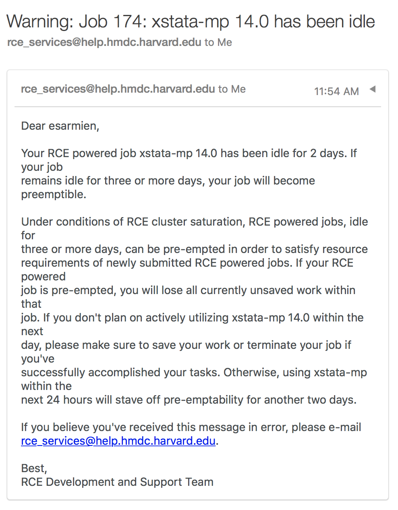

Job lifetime limits in the RCE¶
Have you received an email like this?
{kind=link}
Instead of requesting that you extend your job, you can now run your job for as long as it’s active. An active job is a job which is performing a computation or currently being used interactively through its graphical user interface.
If you have a job which you haven’t touched for two days, you will receive a warning that your job will become pre-emptible if remaining idle for three days.
What does pre-emptible mean?¶
When the RCE is saturated, meaning that all resources have been claimed by users, some jobs can be placed back into the queue by new jobs. If your job has been idle for three or more days, it is possible that, under these conditions, your job could be placed back into the queue. Graphical jobs that are placed back into the queue are essentially terminated. You will lose your work, unless you save it.
Basic rule of thumb: If you’re not actively using your job, terminate it. Otherwise, your job will continue to idle and could potentially live forever, unless it is pre-empted by a new job under conditions of RCE cluster saturation.
How is idle time calculated?¶
Every five minutes, the RCE calculates the idle time of your job by examining the amount of cpu usage of your job. This ratio is so low that even clicking on a menu or typing text into your application is enough to reset your idle counter to zero. Idle time is only evaluated on jobs which are literally doing nothing.